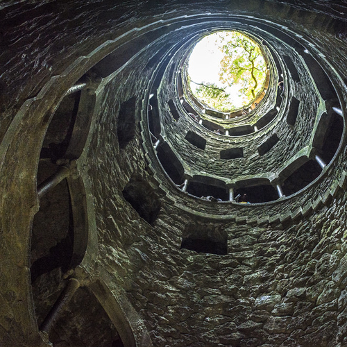

Slogan: A caminho de Poprtugal


Sintra - Cidade dos Palacios

Sintra é uma vila portuguesa no distrito e área metropolitana de Lisboa, integrando a sua parte norte (Grande Lisboa).
É sede de um município com 319,23 km² de área[2] e 381 728 habitantes (2015),[3][4] subdividido em 11 freguesias.[5] A sua população representa 13,37% do total metropolitano e 19,82% do total da Grande Lisboa. O município é limitado a
norte pelo município de Mafra, a leste por Loures, Odivelas e Amadora, a sudeste por Oeiras, a sul por Cascais e a oeste pelo oceano Atlântico. Adquire importância no contexto nacional por ser o segundo concelho mais populoso de
Portugal, após a capital, e a vila com mais habitantes, seguida das de Cascais e Oeiras. Entre os seus núcleos de maior importância encontram-se, para além da própria vila de Sintra, as cidades de Queluz e Agualva-Cacém. Apresenta uma
grande heterogeneidade do seu território, sendo as suas freguesias litorais e do norte ainda de características florestais e rurais, em contraste com as freguesias urbanizadas do sul que se foram desenvolvendo em virtude da melhoria das
suas acessibilidades e proximidade à capital. Destas sobressaem pela sua relevância o IC16 e o IC19, a Linha de Sintra e, em menor medida, a Linha do Oeste.[6]
Geograficamente, o concelho situa-se no final do maciço formado pelas serras de Aire, Candeeiros e Montejunto, rematado pelo Maciço de Sintra, onde se destaca a sua serra e a da Carregueira. O ponto mais alto do concelho, que é também o
da área metropolitana, encontra-se na Pena, na Serra de Sintra, e eleva-se em 528 metros de altitude. Rodeando-as encontram-se plataformas que não ultrapassam os 200 metros e cravadas por diversas ribeiras que demarcam a paisagem.[6]
A Vila de Sintra é notável pela presença da sua arquitetura romântica, resultando na sua classificação enquanto Paisagem Cultural de Sintra, Património Mundial da UNESCO e tem recusado ser elevada a categoria de cidade, apesar de ser
sede do segundo município mais populoso em Portugal.
A partir de la segunda mitad del siglo XIX, los habitantes más adinerados se trasladaron a la periferia y en la villa se instalaron establecimientos de alojamiento que atrajeron a los visitantes, convirtiendo a la ciudad en un centro
turístico. En
1854 tuvieron lugar los primeros intentos de construir una línea ferroviaria que comunicara Sintra con Lisboa, la cual finalmente se inauguraría el 2 de abril de 1887, tras el fugaz funcionamiento de un monocarril.712
Perfil do Autor